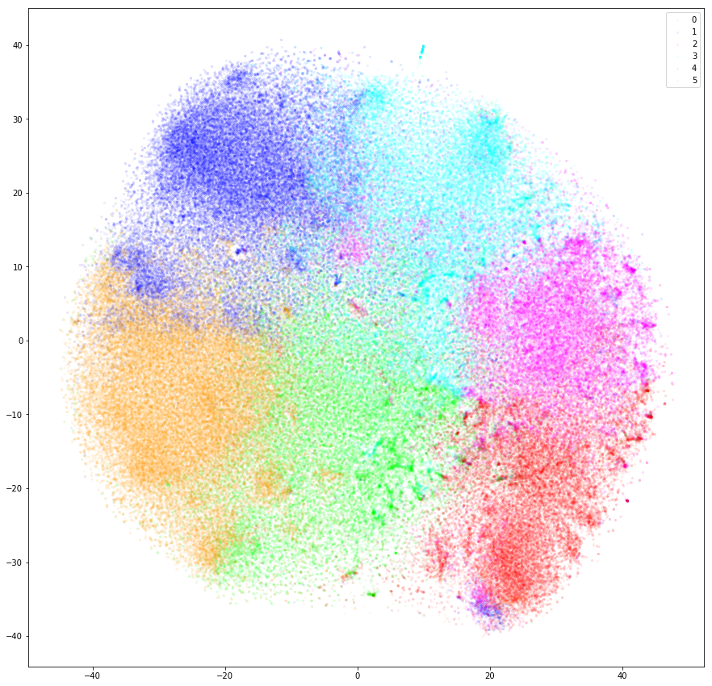
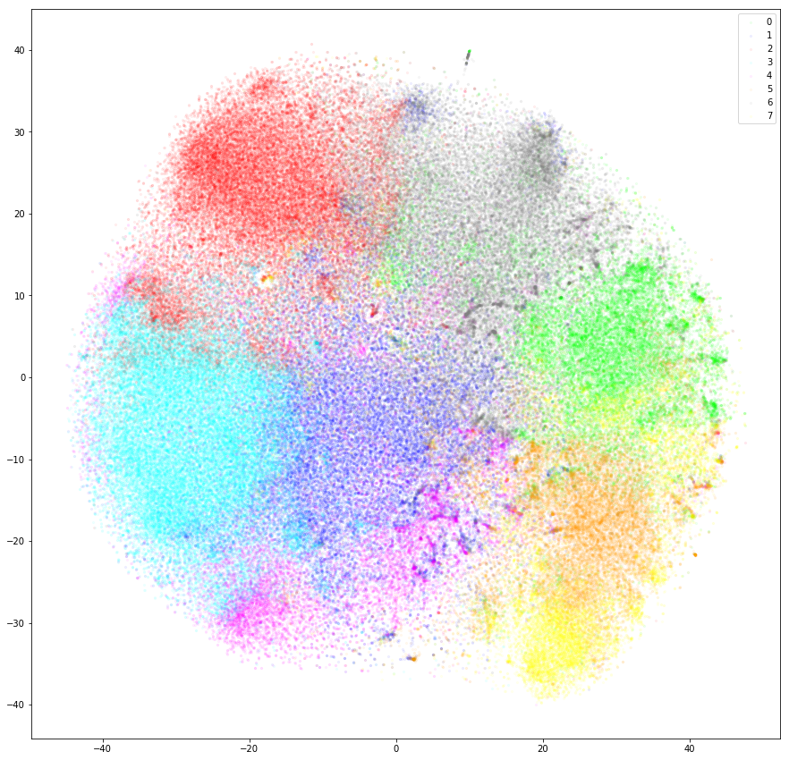

Thompson sampling 동작 방식 설명. 7개중 상위 3개 선택
막대가 실제 성공율
뉴스의 Matrix Factorization결과를 이용해서, 사용자 vector로 6개로 clustering

뉴스의 Matrix Factorization결과를 이용해서, 사용자 vector로 8개로 clustering

약물 실험. Thompson sampling을 이겨 보세요.
환경설정
약 숫자:
환자 숫자:
Play
Plot
약물 실험
"Play" 버튼을 눌러서 약물의 실험해 보세요. "Plot" 을 누르면 Thompson sampling 의 성능이 표시됩니다.
실험 결과
drug 버튼을 누르면 실험 결과가 여기에 표시됨
실제 약물 생존률
"Plot" 버튼을 누르면 실제 약의 생존률이 표시됨
산 환자 수 (높은게 좋음)
"Plot" 버튼을 누르면 알고리즘의 성능이 표시됨
Regret (낮은게 좋음)
"Plot" 버튼을 누르면 알고리즘의 성능이 표시됨